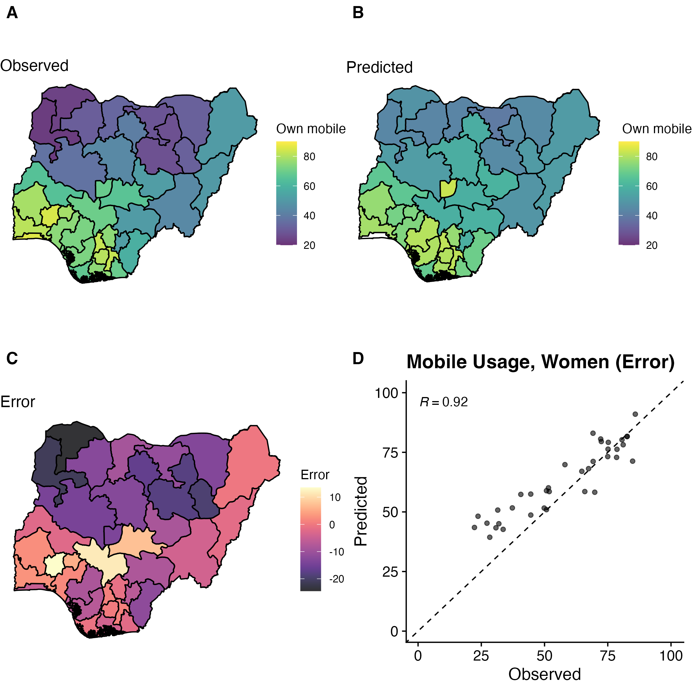

Introduction to R
Department of Sociology | University of Texas at Austin
2026-01-15
Welcome to “Intro to R”
Course website:
- www.github.com/caseybreen/intro_r
- Slides, exercises, and solutions
Course goals
- Overview: why
Ris a powerful tool for social science research
- Install
RandRStudio
- Introduction to
Rsyntax, data types, and data structures
- Basic understanding of data manipulation and visualization
Course agenda
Session 1
Module 1: Introduction to
R,RStudio,and code formatsModule 2:
Rprogramming fundamentals (syntax, operators, data types, data structures, sequencing)Module 3: Working with data (indexing vectors / matrices, importing data)
Session 2
Module 4: Importing and exporting data
Module 5: Data manipulation (
dplyr) and data visualization (ggplot2)Module 6: Best practices and resources for self-study
Module 1
Introduction to R, RStudio, and code formats
Learning objectives:
Installing
RandRStudioWhy
R?Understanding
RScripts,Rnotebooks, Quarto documents
R and RStudio
Ris a statistical programming language- Download: https://cloud.r-project.org
RStudiois an integrated development environment (IDE) forRprogramming- Download: http://www.rstudio.com/download
Why R?
Free, open source — great for reproducibility and open science
Powerful language for data manipulation, statistical analysis, and publication-ready data visualizations
Excellent community, lots of free resources
Data visualization
Easy to simulate + plot data

RStudio panes

Why RStudio?
All-in-one development environment: streamlines coding, data visualization, and workflow
Extensible: supports R — but also Python, SQL, and Git
Rich community: eases learning and problem-solving
Code formats: R Scripts vs. R Notebooks
RScriptsSimple: just code
Best for simple tasks (and multi-script pipelines)
RNotebooks (Quarto,RNotebook)Integrated: Mix of code, text, and outputs for easy documentation
Interactive: real-time code execution and output display
Quarto documents
“Notebook” Style: supports interactive code and text
Code cells: segments for code execution
Text chunks: annotations or explanations in Markdown format.
- Inline output: figures and code output display directly below the corresponding code cell

Installing packages

Running code
Run all code in a quarto document (or
Rscript, orRnotebook)- Exception: install packages, quick checks in console
To run a single line of code in a code cell
- Cursor over line,
Ctrl + Enter(Windows/Linux) orCmd + Enter(Mac).
- Cursor over line,
To run a full code cell (or script)
Ctrl + Shift + Enter(Windows/Linux) orCmd + Shift + Enter(Mac).
Live coding demo
- Demo of creating a new Quarto document and running code in a code cell
- Your turn next…
In-class exercise 0
Create a new quarto document
File -> New File -> Quarto Document -> Create
Create a new code cell
Insert -> Executable cell -> R
Practice running code below
Module 2
R programming fundamentals
Learning objectives:
Comprehend R objects and functions
Master basic syntax, including comments, assignment, and operators
Understand data structures and types in R
Objects
- Everything in R is an object
Vectors: Ordered collection of same type
Data Frames: Table of columns and rows
Function: Reusable code block
List: Ordered collection of objects
Functions
- Built-in “base” functions
- Custom, user-defined functions
[1] 7- Functions from packages
Assignment operators
Use
<-or=for assignment<-is preferred and advised for readability
Formally, assignment means “assign the result of the operation on the right to object on the left”
Arithmetic operators
- Addition / Subtraction
- Multiplication / division
- Exponents
Comparison and logical operators
Operators
| Operator | Symbol |
|---|---|
| AND | & |
| OR | | |
| NOT | ! |
| Equal | == |
| Not Equal | != |
| Greater/Less Than | > or < |
| Greater/Less Than or Equal | >= or <= |
| Element-wise In | %in% |
Data structures
There are lots of data structures; we’ll focus on
vectorsanddata frames.Vectors: One-dimensional arrays that hold elements of a single data type (e.g., all numeric or all character).Data frames: Two-dimensional tables where each column can have a different data type; essentially a list of vectors of equal length.
Vectors and data frames
Vectorexample
[1] 1 2 3 4 5Data frameexample
Data types
Each
vectorordata framecolumn can only contain one data type:Numeric: Used for numerical values like integers or decimals.Character: Holds text and alphanumeric characters.Logical: Represents binary values - TRUE or FALSE.Factor: Categorical data, either ordered or unordered, stored as levels.
NA (missing) values in R
NArepresents missing or undefined data.- Can vary by data type (e.g.,
NA_character_andNA_integer_)
- Can vary by data type (e.g.,
NAvalues can affect summary statistics and data visualization.What happens when you run the code below?
Generating sequences in R
- Method 1: Manually write out sequence using
c()
- Method 2: Colon operator (
:), creates sequences with increments of 1
- Method 3:
seq()Function: More flexible and allows you to specify thestart,end, andbyparameters.
Functions
Function: Input arguments, performs operations on them, and returns a result
For each of the below functions, what are the:
Input arguments?
Operations performed?
Results?
Keyboard shortcuts
Insert new code cell
macOS:
Cmd+Option+IWindows/Linux:
Ctrl+Alt+I
Run full code cell or script
macOS:
Cmd+Shift+EnterWindows/Linux:
Ctrl+Shift+enter
Assignment operator (creates <-)
macOS:
option+-Windows/Linux:
option+-
Live coding demo
Assignment (e.g.,
x <- 4)Logical expressions (e.g.,
x > 10)Creating a basic sequence
Your turn next…
In-class exercise 1
- Assign
xandyto take values 3 and 4. - Assign
zas the product ofxandy. - Write code to calculate the square of 3. Assign this to a variable
three_squared. - Write a logical expression to check if
three_squaredis greater than 10. - Write a logical expression testing whether
xis not greater than 10. Use thenegatesymbol (!).
Exercise 1 solutions
- Assign
xandyto take values 3 and 4.
- Assign
zas the product ofxandy.
- Calculate the square of 3 and assign it to a variable called
three_squared.
- Write a logical expression to check if
three_squaredis greater than 10.
- Write a logical expression to test whether
three_squaredis not greater than 10. Use thenegatesymbol (!).
In-class exercise 2
- Generate vectors containing the numbers 100, 101, 102, 103, 104, and 105 using 3 different methods (e.g.,
c(),seq(),:). In what scenarios might each method be most convenient? - Generate a sequences of all even numbers between 0 and 100. Use the
seq()function. - Create a descending sequence of numbers from 100 to 1, and assign it to a variable. Use the
seq()function.
Exercise 2 solutions
- Generate vectors containing the numbers 100 to 105 using three different methods (
c(),seq(),:). Discuss the convenience of each method.
- Generate a sequence of all even numbers between 0 and 100. Use the
seq()function.
- Create a descending sequence of numbers from 100 to 1, and assign it to a variable. Use the
seq()function.
Module 3
Working with vectors and data frames
Learning objectives
Select elements from
vectorsand columns fromdata framesSubset
data framesInvestigate characteristics of
data frames
Indexing vectors
- Basic indexing
[1] 1[1] 3- Conditional indexing
Working with data frames
Data framesare the most common and versatile data structure inRStructured as rows (observations) and columns (variables)
| id | name | age | gender | score |
|---|---|---|---|---|
| 1 | Alice | 25 | F | 90 |
| 2 | Bob | 30 | M | 85 |
| 3 | Carol | 22 | F | 88 |
| 4 | Dave | 28 | M | 92 |
| 5 | Emily | 24 | F | 89 |
Working with data frames
head()- looks at top rows of thedata frame$operator - access a column as avector
Subsetting data frames
Methods:
$: Single column by name.df[i, j]: Rowiand columnj.df[i:j, k:l]: Rowsitojand columnsktol.
Conditional Subsetting:
df[df$age > 25, ].
Quiz
Which rows and will this return?
- Which rows and which columns will this return?
Answers
Explore data frame characteristics
Check number of rows
Check number of columns
Check column names
Live coding demo
Generate random draws from a normal distribution using the
rnormfunctionSubset the vector of random draws to only include certain observations
Look at basic summary statistics
In-class exercise 3
Generate a
vectorof 100 observations drawn from a normal distribution with a mean of 10 and a standard deviation of 2. Use thernormfunction.What are the 1st, 10th, and 100th elements of this
vector?Calculate the mean of this
vector. How does thissamplemean relate to thepopulationmean (hint: population mean = 10) of the distribution?Calculate the difference between the sample mean and the population mean. Discuss the reason for the discrepancy.
Repeat steps 1-4 with a new sample size of 10,000. Did the difference between the sample mean and the population mean decrease? Why?
Exercise 3 solutions
[1] 9.625076 11.940661 5.094503[1] 0.09042448# Calculate the Z-score for the sample mean
sample_data_10000 <- rnorm(10000,
mean = 10,
sd = 2)
# Calculate the mean of this sample
sample_data_10000 <- mean(sample_data_10000)
# Calculate the difference between the mean of the sample and the expected value of the mean
sample_data_10000 <- abs(sample_data_10000 - 10)
sample_data_10000[1] 0.02897172Questions?
Thanks for your attendance and participation
Please independently complete all exercises in problem set 1 (and review solutions)
Questions: casey.breen@demography.ox.ac.uk
Session 2
Module 4: Importing and exporting in data
Module 5: Data manipulation (
dplyr) and data visualization (ggplot2)Module 6: Best practices for
Rcoding and resources for self-study
Module 4
Importing and exporting data
Learning objectives
Common data formats
Functions for importing / exporting data
Types of file paths in
R
Importing data
Common formats for data
- .csv, .xlsx, .txt, .dat (stata), etc.
Key functions
read_csv()function fromtidyverse: Read CSV files- Also built-in (“base”) function:
read.csv()
- Also built-in (“base”) function:
read.table(): Read text filesreadxl::read_excel(): Read Excel files
File paths
Absolute Path: Specifies the full path locate a file or directory, starting with the root directory.
Windows:
"C:\Users\username\folder\file.csv"macOS/Linux:
"/home/username/folder/file.csv"
Relative Path: Specifies how to find the file or directory based on the current working directory.
folder/file.csv
Working directories
The working directory is the folder where your R session or script looks for files to read, or where it saves files you write
Commands like
read_csv("file.csv")orwrite_csv(data, "file.csv")will read from or write to this directory by defaultKey syntax:
getwd()— returns working directorysetwd("/path/to/folder")— sets working directory
Reading in .CSV files
Recap: to read in .csv files use
read_csv()function fromtidyverse- This will read in the .csv file into memory as a
data frame
- This will read in the .csv file into memory as a
- Write out a
data frameto a .csv file usingwrite_csv():
Downloading data for exercises
We will be using the CenSoc Numident Demo dataset
Please download the .csv file from the course website (
intro_r/data)Short url: https://tinyurl.com/intro-r-data
Live coding demo
- Downloading demo file from Github
- Reading in a .csv file in
Rusingread_csv()- Absolute and relative paths
- Using
tabto auto-complete file paths - Exploring a
data frame: number of columns, rows, column names, etc.
In-class exercise 1
- Load and install the
tidyversepackages using the commandsinstall.packages()andlibrary() - Use the
read_csv()function to read in the downloaded dataset and assign it to the objectcensoc - Use the
headcommand to look at the first 5 rows - How many columns are in the dataset?
- How many rows are in the dataset?
- List the column names. What are a few research questions that could be addressed using this dataset?
Exercise 1 solutions
- Load and install the
tidyversepackages using the commandsinstall.packages()andlibrary()
- Use the
read_csv()function to read in the dataset and assign it to the objectcensoc
- Use the
head()command to look at the first 5 rows
- How many columns are in the dataset?
Exercise 1 solutions (cont.)
- How many rows are in the dataset?
- List the column names.
Module 5
Data manipulation and visualization
Learning objectives
Overview of
tidyversesuite of packagesFundamentals of data manipulation with
dplyrData visualization with
ggplot
Tidyverse
- Packages: Collection of R packages designed for data science.
- Data manipulation: Simplifies data cleaning and transformation with
dplyr. - Data Visualization: Enables advanced plotting with
ggplot2.

Data Manipulation using dplyr
filter: Select rows based on conditions.
select: Choose specific columns
mutate: Add or modify columns
summarize or summarise: Aggregate or summarize data based on some criteria
group_by: Group data by variables. Often used with summarise().
The Pipe Operator %>% (or |> ) in R
Takes the output of one function and passes it as the first argument to another function
- “And then do…”
What’s the below code doing?
Recoding values in R
Sometime you want to recode a variable to take different values (e.g., recoding exact income to binary high/low income variable)
The
case_when()function inRis part of thedplyrpackage and is used for creating new variables based on multiple conditions:
Live coding demo
Filter data
Selecting data
Calculating summary statistics by group
Creating and recoding variables
In-class exercise 2
- Filter the
censocdata.frame to include only women (sex == 2). Use thefiltercommand. - Filter the
censocdata.frame to include only people born between 1905 and 1920 using thebyearvariable. - Select the columns
histid,death_age,sex, andownershp - Calculate the average age of death for women (hint: refer to question 1)
Exercise 2 solutions
- Filter the
censocdata.frame to include only women (sex == 2). Use thefiltercommand.
- Filter the
censocdata.frame to include only people born between 1905 and 1920 using thebyearvariable.
Exercise 2 solutions (cont.)
- Select the columns
histid,death_age,sex, andownershp
# A tibble: 6 × 4
histid death_age sex ownershp
<chr> <dbl> <dbl> <dbl>
1 235C4FA2-B407-4E61-A31D-DBF299C1C120 85 1 1
2 0DE161A7-34A7-47EA-B053-EA8549172CCC 77 1 1
3 EFF79CEC-DA83-482A-AB9A-FFCAC3C9A6A5 77 1 1
4 B51D01FA-54A4-4E5E-8BCF-B6D9521A2983 73 2 2
5 D545AEB1-C5C3-4E32-BB22-4BF58CF50311 73 1 2
6 A71A537B-C440-4E85-A276-334B05B723A7 82 2 1- Calculate the average age of death for women (hint: refer to question 1)
Data visualization using ggplot
ggplot2provides a powerful and flexible system for creating a variety of data visualizationsdata: specifies the dataset to be used for the plotaes: Defines what data to showgeoms: Chooses the type of plot (e.g., histogram)
Types of plots
geom_point(): Scatter plotgeom_bar(): Bar chartgeom_histogram(): Histogram
Basic histogram example
- Histogram of age of death in censoc dataset

Customisable – specify theme
+ theme(<theme_choice>)will add on a theme

Customisable – specify colors
colorandfillwill can change color / fill of plot

Customisable – add on labels/title
+ labs()add on title/axis labels

Live coding demo
Create histogram using
ggplotDemonstrate flexibility of
ggplot- Themes
- Axis labels, titles
- Colors
In-class exercise 3
Make a histogram of the variable
death_age. When are most people dying?Make a histogram of the variable
byear. When are most people born?Recode the variable
sexfrom numeric values (1, 2) to take character values (“men” and “women”). Note that 1 = men, 2 = women.Calculate the mean of of death for both men and women using
group_by()andsummarize(). Use thedeath_agevariable. Do men or women live longer in this sample?Make a histogram of the variable
death_agefor both men and women. Use thefilter()command.Now try adding the following line to the histogram you made in question 1:
+ facet_wrap(~sex)
Exercise 3 solutions
- Make a histogram of the variable
death_age. When are most people dying?

Exercise 3 solutions (cont.)
- Make a histogram of the variable
byear. When are most people born?

Exercise 3 solutions (cont.)
- Recode the variable
sexfrom numeric values (1, 2) to take character values (“men” and “women”). Note that 1 = men, 2 = women.
# A tibble: 6 × 2
sex sex_recode
<dbl> <chr>
1 1 men
2 1 men
3 1 men
4 2 women
5 1 men
6 2 women Exercise 3 solutions (cont.)
- Calculate the mean of of death for both men and women using
group_by()andsummarize(). Do men or women live longer?
Exercise 3 solutions (cont.)
- Make a histogram of the variable
death_agefor both men and women.


Exercise 3 solutions (cont.)
- Now try adding the following line to the histogram you made in question 1:
+ facet_wrap(~sex)

Module 6
Best practices and resources for self-study
Learning objectives
Best practices for writing and documenting code
Where to go when you’re stuck
Resources for learning more
Best practices (opinionated)
- Style: use descriptive names and “snake_case”
- Documentation: Start commenting your code early, it’s a good habit for the future
- Learn
tidyverse: offers a more coherent syntax and is widely used in data science - Advanced topics: R Projects, github integration, etc
When you’re stuck
Google
Lots of packages have documentation available online
Stack overflow – excellent resource
Use help syntax (e.g.,
?dplyr)GPT (decent, but be careful!)
Resources for learning more
R for data science (https://r4ds.hadley.nz/)
Data visualization: a practical introduction (https://socviz.co/)
In-class exercise 4
Do homeowners in the United States live longer than renters in the United States?
Using the
censocdata.frame, create a new data.framecensoc_homeownershipthat filters out any “missing” value for theownershpvariable (missing = 0). Use thefilter()command.In the
censoc_homeownershipdata.frame, create a new variablehomeownerusing themutate()command and thecase_when()command. Assign this new variablehomeownera value of “own” ifownershp == 1and a value of “rent” ifownershp == 2.Make a histogram on the age of death for “homeowner” and “renter” groups using
ggplotusing thecensoc_homeownershipdata.frame. Use the+ facet_wrap(~homeowner)command.Calculate the average age of death for “homeowner” and “renter” groups. Which group lives longer, on average? Use the
group_by()andsummarize()functions. What are some possible explanations for homeowners living longer than renters in the US?
Exercise 4 solution
Do homeowners in the United States live longer than renters in the United States?
- Using the
censocdata.frame, create a new data.framecensoc_homeownershipthat filters out any “missing” value for theownershpvariable (missing = 0). Use thefilter()command.
- In the
censoc_homeownershipdata.frame, create a new variablehomeownerusing themutate()command and thecase_when()command. Assign this new variablehomeownera value of “own” ifownershp == 1and a value of “rent” ifownershp == 2.
Exercise 4 solution (cont.)
- Make a histogram on the age of death for “homeowner” and “renter” groups using
ggplotusing thecensoc_homeownershipdata.frame. Use the+ facet_wrap(~homeowner)command.

Exercise 4 solution (cont.)
- Calculate the average age of death for “homeowner” and “renter” groups. Which group lives longer, on average? Use the
group_by()andsummarize()functions What are some possible explanations for homeowners living longer than renters in the US?
Thank you
Course materials available from:
Please independently complete all exercises in problem set 2 (and review solutions)
Questions?
Comments
Use
#to start a single-line commentComments are an important way to document code